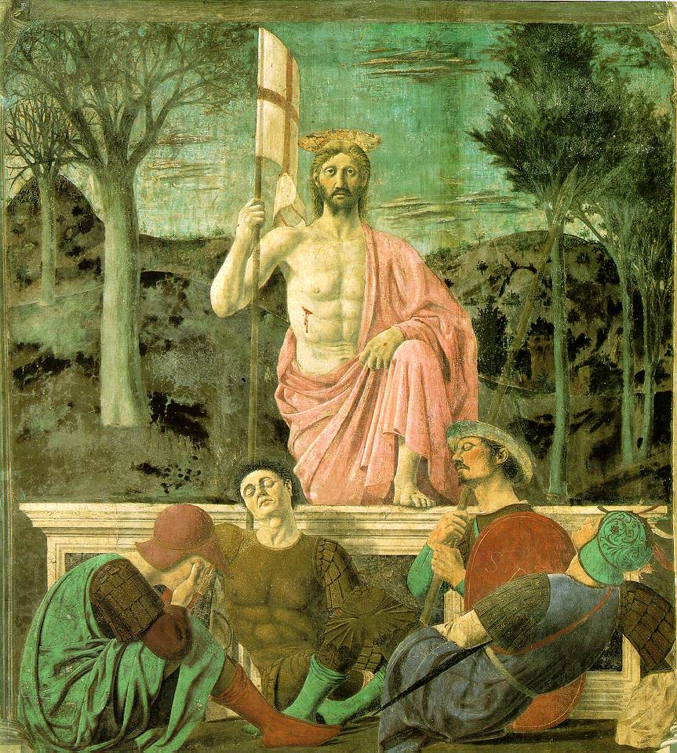

Comment le Christ se détache des gardes

Repères pédagogiques ajoutés.
- Bord du tombeau. Suivez l’arête de pierre de gauche à droite, puis arrêtez-vous au pied qui prend appui sur la lèvre du tombeau. Cette ligne sépare les figures et le pied la franchit visuellement.
- Point de vue. Regardez d’abord le deuxième garde à partir de la gauche. Sa tête renversée vous montre son visage par-dessous. Relevez les yeux vers le Christ, qui présente son visage de face. La partie basse est construite pour un regard placé bas, tandis que le Christ paraît vous faire face à hauteur de son visage.
- Plans du paysage. Partez des gardes au premier plan et cherchez les arbres derrière le Christ. Le recouvrement des formes vous fait mesurer la distance entre les corps, le tombeau et le paysage.
Museo Civico di Sansepolcro — Resurrezione · Web Gallery of Art — Perspective de la Résurrection